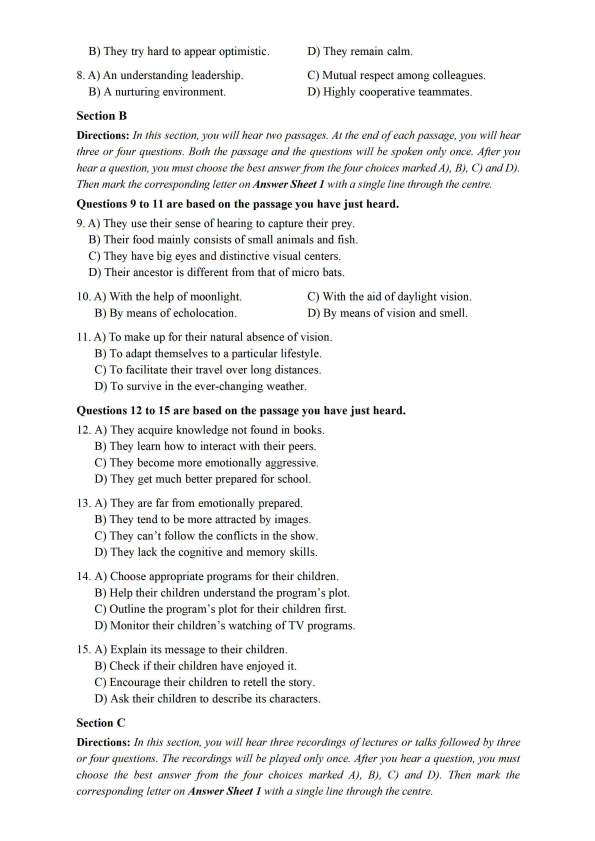
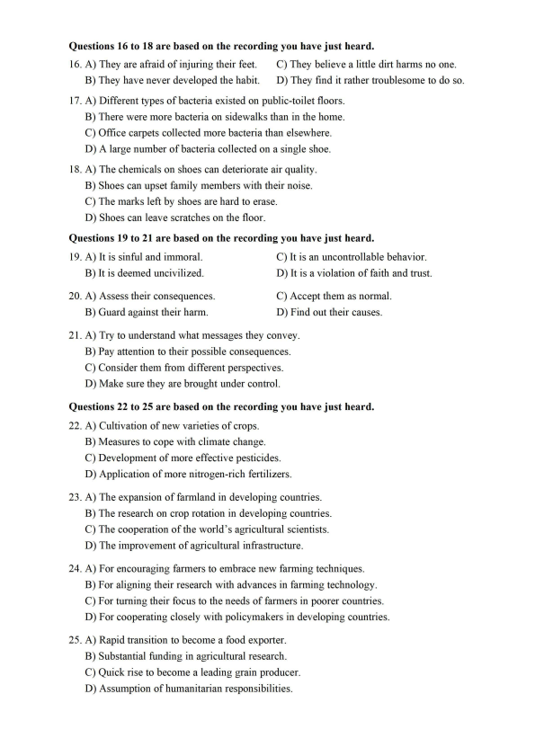
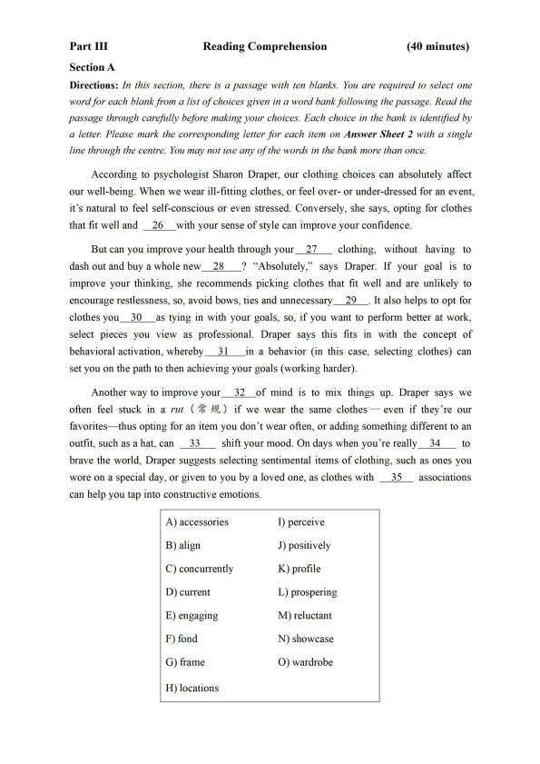
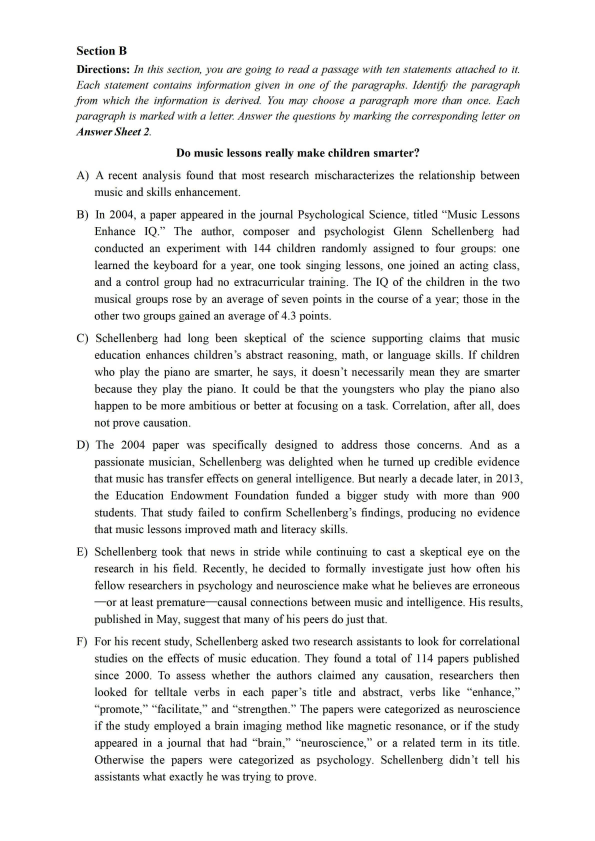
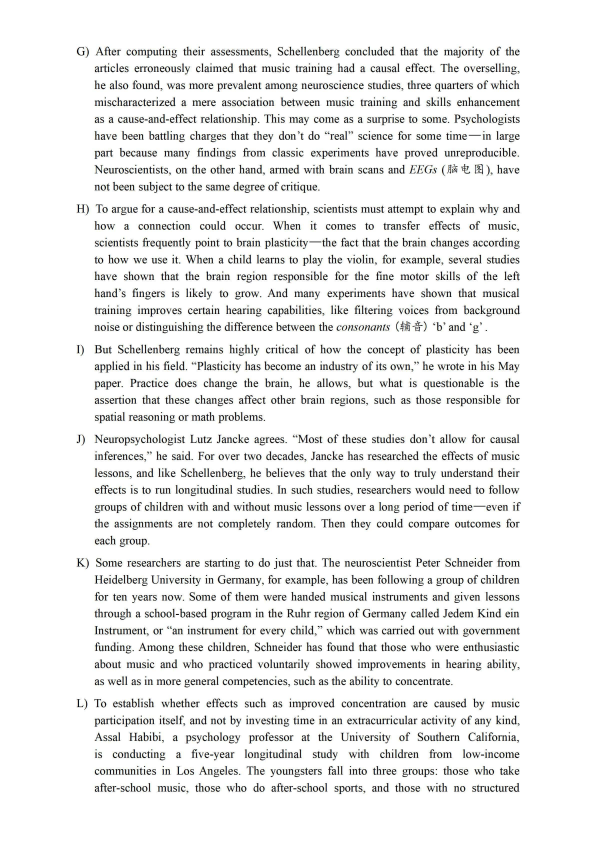
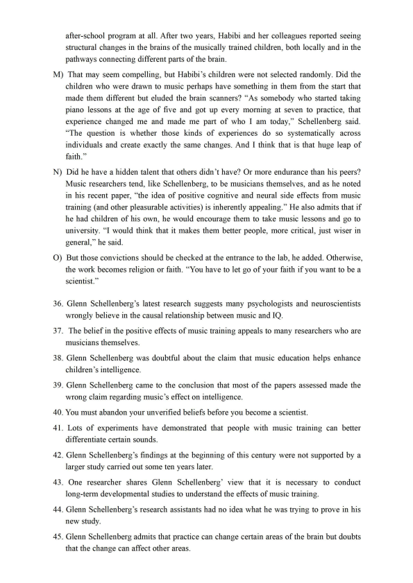
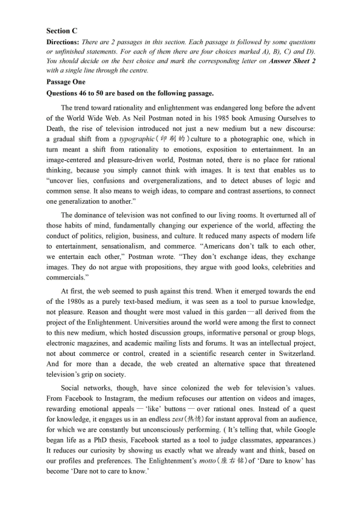
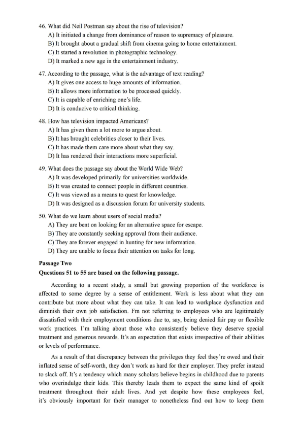
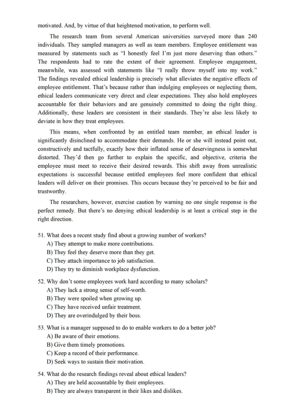
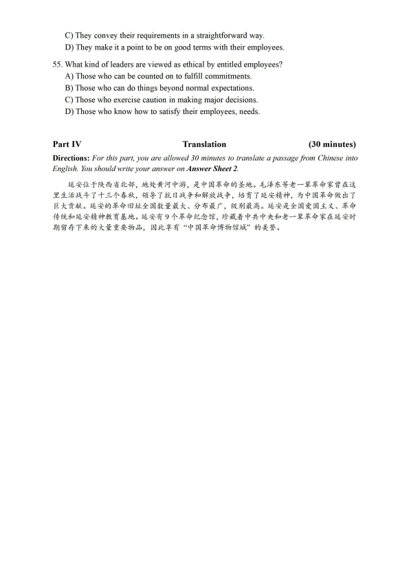

第 1 / 11 页

Part I
Writing
(30 minutes)
Directions: For this part, you are allowed 30 minutes to write an essay related to the short
passage given below. In your essay, you are to comment on the phenomenon described in the
passage and suggest measures to address the issue. You should write at least 150 words but no
more than 200 words.
Nowadays star chasing is prevalent among many teenagers. They take pop stars as their
idols, imitating their way of talking, following their style of dressing, and seeking every chance
to meet them in person at great expenses.
Part II
Listening Comprehension
(30 minutes)
Section A
Directions: In this section, you will hear two long conversations. At the end of each
conversation, you will hear four questions. Both the conversation and the questions will be
spoken only once. After you hear a question, you must choose the best answer from the four
choices marked A), BJ, C) and D). Then mark the corresponding letter on Answer Sheet 1 with
a single line through the centre.
Questions 1 to 4 are based on the conversation you have just heard.
1. A) It has given rise to much controversy.
C) It was primarily written for vegetarians.
B) It has been very favorably received.
D) It offends many environmentalists.
2. A) She neglects people's efforts in animal protection.
B) She tries to force people to accept her radical ideas.
C) She ignores the various benefits of public transport.
D) She insists vegetarians are harming the environment.
3. A) They are significant.
C) They are rational.
B) They are revolutionary.
D) They are modest.
4. A) It would help to protect the environment.
B) It would generate money for public health.
C) It would need support from the general public.
D) It would force poor people to change their diet.
Questions 5 to 8 are based on the conversation you have just heard.
5. A) Where successful people's strengths come from.
B) Why many people fight so hard for success.
C) How she achieved her life's goal.
D) What makes people successful.
6. A) Having someone who has confidence in them.
B) Having someone who is ready to help them.
C) Having a firm belief in their own ability.
D) Having a realistic attitude towards life.
7. A) They adjust their goals accordingly.
C) They stay positive.
查看 / 复制本页文字
Part I Writing (30 minutes) Directions: For this part, you are allowed 30 minutes to write an essay related to the short passage given below. In your essay, you are to comment on the phenomenon described in the passage and suggest measures to address the issue. You should write at least 150 words but no more than 200 words. Nowadays star chasing is prevalent among many teenagers. They take pop stars as their idols, imitating their way of talking, following their style of dressing, and seeking every chance to meet them in person at great expenses. Part II Listening Comprehension (30 minutes) Section A Directions: In this section, you will hear two long conversations. At the end of each conversation, you will hear four questions. Both the conversation and the questions will be spoken only once. After you hear a question, you must choose the best answer from the four choices marked A), BJ, C) and D). Then mark the corresponding letter on Answer Sheet 1 with a single line through the centre. Questions 1 to 4 are based on the conversation you have just heard. 1. A) It has given rise to much controversy. C) It was primarily written for vegetarians. B) It has been very favorably received. D) It offends many environmentalists. 2. A) She neglects people's efforts in animal protection. B) She tries to force people to accept her radical ideas. C) She ignores the various benefits of public transport. D) She insists vegetarians are harming the environment. 3. A) They are significant. C) They are rational. B) They are revolutionary. D) They are modest. 4. A) It would help to protect the environment. B) It would generate money for public health. C) It would need support from the general public. D) It would force poor people to change their diet. Questions 5 to 8 are based on the conversation you have just heard. 5. A) Where successful people's strengths come from. B) Why many people fight so hard for success. C) How she achieved her life's goal. D) What makes people successful. 6. A) Having someone who has confidence in them. B) Having someone who is ready to help them. C) Having a firm belief in their own ability. D) Having a realistic attitude towards life. 7. A) They adjust their goals accordingly. C) They stay positive.
第 2 / 11 页

B) They try hard to appear optimistic.
D) They remain calm.
8. A) An understanding leadership.
C) Mutual respect among colleagues.
B) A nurturing environment.
D) Highly cooperative teammates.
Section B
Directions: In this section, you will hear two passages. At the end of each passage, you will hear
three or four questions. Both the passage and the questions will be spoken only once. After you
hear a question, you must choose the best answer from the four choices marked AJ, BJ, CJ and DJ.
Then mark the corresponding letter on Answer Sheet 1 with a single line through the centre.
Questions 9 to 11 are based on the passage you have just heard.
9. A) They use their sense of hearing to capture their prey.
B) Their food mainly consists of small animals and fish.
C) They have big eyes and distinctive visual centers.
D) Their ancestor is different from that of micro bats.
10. A) With the help of moonlight.
C) With the aid of daylight vision.
B) By means of echolocation.
D) By means of vision and smell.
11. A) To make up for their natural absence of vision.
B) To adapt themselves to a particular lifestyle.
C) To facilitate their travel over long distances.
D) To survive in the ever-changing weather.
Questions 12 to 15 are based on the passage you have just heard.
12. A) They acquire knowledge not found in books.
B) They learn how to interact with their peers.
C) They become more emotionally aggressive.
D) They get much better prepared for school.
13. A) They are far from emotionally prepared.
B) They tend to be more attracted by images.
C) They can't follow the conflicts in the show.
D) They lack the cognitive and memory skills.
14. A) Choose appropriate programs for their children.
B) Help their children understand the program's plot.
C) Outline the program's plot for their children first.
D) Monitor their children's watching of TV programs.
15. A) Explain its message to their children.
B) Check if their children have enjoyed it.
C) Encourage their children to retell the story.
D) Ask their children to describe its characters.
Section C
Directions: Jn this section, you will hear three recordings of lectures or talks followed by three
or four questions. The recordings will be played only once. After you hear a question, you must
choose the best answer from the four choices marked AJ, BJ, CJ and DJ. Then mark the
corresponding letter on Answer Sheet 1 with a single line through the centre.
查看 / 复制本页文字
B) They try hard to appear optimistic. D) They remain calm. 8. A) An understanding leadership. C) Mutual respect among colleagues. B) A nurturing environment. D) Highly cooperative teammates. Section B Directions: In this section, you will hear two passages. At the end of each passage, you will hear three or four questions. Both the passage and the questions will be spoken only once. After you hear a question, you must choose the best answer from the four choices marked AJ, BJ, CJ and DJ. Then mark the corresponding letter on Answer Sheet 1 with a single line through the centre. Questions 9 to 11 are based on the passage you have just heard. 9. A) They use their sense of hearing to capture their prey. B) Their food mainly consists of small animals and fish. C) They have big eyes and distinctive visual centers. D) Their ancestor is different from that of micro bats. 10. A) With the help of moonlight. C) With the aid of daylight vision. B) By means of echolocation. D) By means of vision and smell. 11. A) To make up for their natural absence of vision. B) To adapt themselves to a particular lifestyle. C) To facilitate their travel over long distances. D) To survive in the ever-changing weather. Questions 12 to 15 are based on the passage you have just heard. 12. A) They acquire knowledge not found in books. B) They learn how to interact with their peers. C) They become more emotionally aggressive. D) They get much better prepared for school. 13. A) They are far from emotionally prepared. B) They tend to be more attracted by images. C) They can't follow the conflicts in the show. D) They lack the cognitive and memory skills. 14. A) Choose appropriate programs for their children. B) Help their children understand the program's plot. C) Outline the program's plot for their children first. D) Monitor their children's watching of TV programs. 15. A) Explain its message to their children. B) Check if their children have enjoyed it. C) Encourage their children to retell the story. D) Ask their children to describe its characters. Section C Directions: Jn this section, you will hear three recordings of lectures or talks followed by three or four questions. The recordings will be played only once. After you hear a question, you must choose the best answer from the four choices marked AJ, BJ, CJ and DJ. Then mark the corresponding letter on Answer Sheet 1 with a single line through the centre.
第 3 / 11 页

Questions 16 to 18 are based on the recording you have just heard.
16. A) They are afraid of injuring their feet.
C) They believe a little dirt harms no one.
B) They have never developed the habit.
D) They find it rather troublesome to do so.
17. A) Different types of bacteria existed on public-toilet floors.
B) There were more bacteria on sidewalks than in the home.
C) Office carpets collected more bacteria than elsewhere.
D) A large number of bacteria collected on a single shoe.
18. A) The chemicals on shoes can deteriorate air quality.
B) Shoes can upset family members with their noise.
C) The marks left by shoes are hard to erase.
D) Shoes can leave scratches on the floor.
Questions 19 to 21 are based on the recording you have just heard.
19. A) It is sinful and immoral.
C) It is an uncontrollable behavior.
B) It is deemed uncivilized.
D) It is a violation of faith and trust.
20. A) Assess their consequences.
C) Accept them as normal.
B) Guard against their harm.
D) Find out their causes.
21. A) Try to understand what messages they convey.
B) Pay attention to their possible consequences.
C) Consider them from different perspectives.
D) Make sure they are brought under control.
Questions 22 to 25 are based on the recording you have just heard.
22. A) Cultivation of new varieties of crops.
B) Measures to cope with climate change.
C) Development of more effective pesticides.
D) Application of more nitrogen-rich fertilizers.
23. A) The expansion of farmland in developing countries.
B) The research on crop rotation in developing countries.
C) The cooperation of the world's agricultural scientists.
D) The improvement of agricultural infrastructure.
24. A) For encouraging farmers to embrace new farming techniques.
B) For aligning their research with advances in farming technology.
C) For turning their focus to the needs of farmers in poorer countries.
D) For cooperating closely with policymakers in developing countries.
25. A) Rapid transition to become a food exporter.
B) Substantial funding in agricultural research.
C) Quick rise to become a leading grain producer.
D) Assumption of humanitarian responsibilities.
查看 / 复制本页文字
Questions 16 to 18 are based on the recording you have just heard. 16. A) They are afraid of injuring their feet. C) They believe a little dirt harms no one. B) They have never developed the habit. D) They find it rather troublesome to do so. 17. A) Different types of bacteria existed on public-toilet floors. B) There were more bacteria on sidewalks than in the home. C) Office carpets collected more bacteria than elsewhere. D) A large number of bacteria collected on a single shoe. 18. A) The chemicals on shoes can deteriorate air quality. B) Shoes can upset family members with their noise. C) The marks left by shoes are hard to erase. D) Shoes can leave scratches on the floor. Questions 19 to 21 are based on the recording you have just heard. 19. A) It is sinful and immoral. C) It is an uncontrollable behavior. B) It is deemed uncivilized. D) It is a violation of faith and trust. 20. A) Assess their consequences. C) Accept them as normal. B) Guard against their harm. D) Find out their causes. 21. A) Try to understand what messages they convey. B) Pay attention to their possible consequences. C) Consider them from different perspectives. D) Make sure they are brought under control. Questions 22 to 25 are based on the recording you have just heard. 22. A) Cultivation of new varieties of crops. B) Measures to cope with climate change. C) Development of more effective pesticides. D) Application of more nitrogen-rich fertilizers. 23. A) The expansion of farmland in developing countries. B) The research on crop rotation in developing countries. C) The cooperation of the world's agricultural scientists. D) The improvement of agricultural infrastructure. 24. A) For encouraging farmers to embrace new farming techniques. B) For aligning their research with advances in farming technology. C) For turning their focus to the needs of farmers in poorer countries. D) For cooperating closely with policymakers in developing countries. 25. A) Rapid transition to become a food exporter. B) Substantial funding in agricultural research. C) Quick rise to become a leading grain producer. D) Assumption of humanitarian responsibilities.
第 4 / 11 页

Part III
Section A
Reading Comprehension
(40 minutes)
Directions: In this section, there is a passage with ten blanks. You are required to select one
word for each blank from a list of choices given in a word bank following the passage. Read the
passage through carefully before making your choices. Each choice in the bank is identified by
a letter. Please mark the corresponding letter for each item on Answer Sheet 2 with a single
line through the centre. You may not use any of the words in the bank more than once.
According to psychologist Sharon Draper, our clothing choices can absolutely affect
our well-being. When we wear ill-fitting clothes, or feel over- or under-dressed for an event,
it's natural to feel self-conscious or even stressed. Conversely, she says, opting for clothes
that fit well and
26
with your sense of style can improve your confidence.
But can you improve your health through your
27
clothing, without having to
dash out and buy a whole new
28
? "Absolutely," says Draper. If your goal is to
improve your thinking, she recommends picking clothes that fit well and are unlikely to
encourage restlessness, so, avoid bows, ties and unnecessary
29
. It also helps to opt for
clothes you
30
as tying in with your goals, so, if you want to perform better at work,
select pieces you view as professional. Draper says this fits in with the concept of
behavioral activation, whereby
31
in a behavior (in this case, selecting clothes) can
set you on the path to then achieving your goals (working harder).
Another way to improve your
32 of mind is to mix things up. Draper says we
often feel stuck in a rut ( 1t :i-'J\!, ) if we wear the same clothes -
even if they 're our
favorites- thus opting for an item you don't wear often, or adding something different to an
outfit, such as a hat, can
33
shift your mood. On days when you're really
34
to
brave the world, Draper suggests selecting sentimental items of clothing, such as ones you
wore on a special day, or given to you by a loved one, as clothes with
35
associations
can help you tap into constructive emotions.
A) accessories
B) align
C) concurrently
D) current
E) engaging
F) fond
G) frame
H) locations
I) perceive
J) positively
K) profile
L) prospering
M) reluctant
N) showcase
0) wardrobe
查看 / 复制本页文字
Part III Section A Reading Comprehension (40 minutes) Directions: In this section, there is a passage with ten blanks. You are required to select one word for each blank from a list of choices given in a word bank following the passage. Read the passage through carefully before making your choices. Each choice in the bank is identified by a letter. Please mark the corresponding letter for each item on Answer Sheet 2 with a single line through the centre. You may not use any of the words in the bank more than once. According to psychologist Sharon Draper, our clothing choices can absolutely affect our well-being. When we wear ill-fitting clothes, or feel over- or under-dressed for an event, it's natural to feel self-conscious or even stressed. Conversely, she says, opting for clothes that fit well and 26 with your sense of style can improve your confidence. But can you improve your health through your 27 clothing, without having to dash out and buy a whole new 28 ? "Absolutely," says Draper. If your goal is to improve your thinking, she recommends picking clothes that fit well and are unlikely to encourage restlessness, so, avoid bows, ties and unnecessary 29 . It also helps to opt for clothes you 30 as tying in with your goals, so, if you want to perform better at work, select pieces you view as professional. Draper says this fits in with the concept of behavioral activation, whereby 31 in a behavior (in this case, selecting clothes) can set you on the path to then achieving your goals (working harder). Another way to improve your 32 of mind is to mix things up. Draper says we often feel stuck in a rut ( 1t :i-'J\!, ) if we wear the same clothes - even if they 're our favorites- thus opting for an item you don't wear often, or adding something different to an outfit, such as a hat, can 33 shift your mood. On days when you're really 34 to brave the world, Draper suggests selecting sentimental items of clothing, such as ones you wore on a special day, or given to you by a loved one, as clothes with 35 associations can help you tap into constructive emotions. A) accessories B) align C) concurrently D) current E) engaging F) fond G) frame H) locations I) perceive J) positively K) profile L) prospering M) reluctant N) showcase 0) wardrobe
第 5 / 11 页

Section B
Directions: In this section, you are going to read a passage with ten statements attached to it.
Each statement contains information given in one of the paragraphs. Identify the paragraph
from which the information is derived. You may choose a paragraph more than once. Each
paragraph is marked with a letter. Answer the questions by marking the corresponding letter on
Answer Sheet 2.
Do music lessons really make children smarter?
A) A recent analysis found that most research mischaracterizes the relationship between
music and skills enhancement.
B) In 2004, a paper appeared in the journal Psychological Science, titled "Music Lessons
Enhance IQ." The author, composer and psychologist Glenn Schellenberg had
conducted an experiment with 144 children randomly assigned to four groups: one
learned the keyboard for a year, one took singing lessons, one joined an acting class,
and a control group had no extracurricular training. The IQ of the children in the two
musical groups rose by an average of seven points in the course of a year; those in the
other two groups gained an average of 4.3 points.
C) Schellenberg had long been skeptical of the science supporting claims that music
education enhances children's abstract reasoning, math, or language skills. If children
who play the piano are smarter, he says, it doesn't necessarily mean they are smarter
because they play the piano. It could be that the youngsters who play the piano also
happen to be more ambitious or better at focusing on a task. Correlation, after all, does
not prove causation.
D) The 2004 paper was specifically designed to address those concerns. And as a
passionate musician, Schellenberg was delighted when he turned up credible evidence
that music has transfer effects on general intelligence. But nearly a decade later, in 2013,
the Education Endowment Foundation funded a bigger study with more than 900
students. That study failed to confirm Schellenberg's findings, producing no evidence
that music lessons improved math and literacy skills.
E) Schellenberg took that news in stride while continuing to cast a skeptical eye on the
research in his field. Recently, he decided to formally investigate just how often his
fellow researchers in psychology and neuroscience make what he believes are erroneous
-or at least premature-causal connections between music and intelligence. His results,
published in May, suggest that many of his peers do just that.
F) For his recent study, Schellenberg asked two research assistants to look for correlational
studies on the effects of music education. They found a total of 114 papers published
since 2000. To assess whether the authors claimed any causation, researchers then
looked for telltale verbs in each paper's title and abstract, verbs like "enhance,"
"promote," "facilitate," and "strengthen." The papers were categorized as neuroscience
if the study employed a brain imaging method like magnetic resonance, or if the study
appeared in a journal that had "brain," "neuroscience," or a related term in its title.
Otherwise the papers were categorized as psychology. Schellenberg didn't tell his
assistants what exactly he was trying to prove.
查看 / 复制本页文字
Section B Directions: In this section, you are going to read a passage with ten statements attached to it. Each statement contains information given in one of the paragraphs. Identify the paragraph from which the information is derived. You may choose a paragraph more than once. Each paragraph is marked with a letter. Answer the questions by marking the corresponding letter on Answer Sheet 2. Do music lessons really make children smarter? A) A recent analysis found that most research mischaracterizes the relationship between music and skills enhancement. B) In 2004, a paper appeared in the journal Psychological Science, titled "Music Lessons Enhance IQ." The author, composer and psychologist Glenn Schellenberg had conducted an experiment with 144 children randomly assigned to four groups: one learned the keyboard for a year, one took singing lessons, one joined an acting class, and a control group had no extracurricular training. The IQ of the children in the two musical groups rose by an average of seven points in the course of a year; those in the other two groups gained an average of 4.3 points. C) Schellenberg had long been skeptical of the science supporting claims that music education enhances children's abstract reasoning, math, or language skills. If children who play the piano are smarter, he says, it doesn't necessarily mean they are smarter because they play the piano. It could be that the youngsters who play the piano also happen to be more ambitious or better at focusing on a task. Correlation, after all, does not prove causation. D) The 2004 paper was specifically designed to address those concerns. And as a passionate musician, Schellenberg was delighted when he turned up credible evidence that music has transfer effects on general intelligence. But nearly a decade later, in 2013, the Education Endowment Foundation funded a bigger study with more than 900 students. That study failed to confirm Schellenberg's findings, producing no evidence that music lessons improved math and literacy skills. E) Schellenberg took that news in stride while continuing to cast a skeptical eye on the research in his field. Recently, he decided to formally investigate just how often his fellow researchers in psychology and neuroscience make what he believes are erroneous -or at least premature-causal connections between music and intelligence. His results, published in May, suggest that many of his peers do just that. F) For his recent study, Schellenberg asked two research assistants to look for correlational studies on the effects of music education. They found a total of 114 papers published since 2000. To assess whether the authors claimed any causation, researchers then looked for telltale verbs in each paper's title and abstract, verbs like "enhance," "promote," "facilitate," and "strengthen." The papers were categorized as neuroscience if the study employed a brain imaging method like magnetic resonance, or if the study appeared in a journal that had "brain," "neuroscience," or a related term in its title. Otherwise the papers were categorized as psychology. Schellenberg didn't tell his assistants what exactly he was trying to prove.
第 6 / 11 页

G) After computing their assessments, Schellenberg concluded that the majority of the
articles erroneously claimed that music training had a causal effect. The overselling,
he also found, was more prevalent among neuroscience studies, three quarters of which
mischaracterized a mere association between music training and skills enhancement
as a cause-and-effect relationship. This may come as a surprise to some. Psychologists
have been battling charges that they don't do "real" science for some time-in large
part because many findings from classic experiments have proved unreproducible.
Neuroscientists, on the other hand, armed with brain scans and EEGs (Jl01£. lil ), have
not been subject to the same degree of critique.
H) To argue for a cause-and-effect relationship, scientists must attempt to explain why and
how a connection could occur. When it comes to transfer effects of music,
scientists frequently point to brain plasticity-the fact that the brain changes according
to how we use it. When a child learns to play the violin, for example, several studies
have shown that the brain region responsible for the fine motor skills of the left
hand's fingers is likely to grow. And many experiments have shown that musical
training improves certain hearing capabilities, like filtering voices from background
noise or distinguishing the difference between the consonants (tifl~) 'b' and 'g' .
I) But Schellenberg remains highly critical of how the concept of plasticity has been
applied in his field. "Plasticity has become an industry of its own," he wrote in his May
paper. Practice does change the brain, he allows, but what is questionable is the
assertion that these changes affect other brain regions, such as those responsible for
spatial reasoning or math problems.
J) Neuropsychologist Lutz Jancke agrees. "Most of these studies don't allow for causal
inferences," he said. For over two decades, Jancke has researched the effects of music
lessons, and like Schellenberg, he believes that the only way to truly understand their
effects is to run longitudinal studies. In such studies, researchers would need to follow
groups of children with and without music lessons over a long period of time-even if
the assignments are not completely random. Then they could compare outcomes for
each group.
K) Some researchers are starting to do just that. The neuroscientist Peter Schneider from
Heidelberg University in Germany, for example, has been following a group of children
for ten years now. Some of them were handed musical instruments and given lessons
through a school-based program in the Ruhr region of Germany called Jedem Kind ein
Instrument, or "an instrument for every child," which was carried out with government
funding. Among these children, Schneider has found that those who were enthusiastic
about music and who practiced voluntarily showed improvements in hearing ability,
as well as in more general competencies, such as the ability to concentrate.
L) To establish whether effects such as improved concentration are caused by music
participation itself, and not by investing time in an extracurricular activity of any kind,
Assal Habibi, a psychology professor at the University of Southern California,
is conducting a five-year longitudinal study with children from low-income
communities in Los Angeles. The youngsters fall into three groups: those who take
after-school music, those who do after-school sports, and those with no structured
查看 / 复制本页文字
G) After computing their assessments, Schellenberg concluded that the majority of the articles erroneously claimed that music training had a causal effect. The overselling, he also found, was more prevalent among neuroscience studies, three quarters of which mischaracterized a mere association between music training and skills enhancement as a cause-and-effect relationship. This may come as a surprise to some. Psychologists have been battling charges that they don't do "real" science for some time-in large part because many findings from classic experiments have proved unreproducible. Neuroscientists, on the other hand, armed with brain scans and EEGs (Jl01£. lil ), have not been subject to the same degree of critique. H) To argue for a cause-and-effect relationship, scientists must attempt to explain why and how a connection could occur. When it comes to transfer effects of music, scientists frequently point to brain plasticity-the fact that the brain changes according to how we use it. When a child learns to play the violin, for example, several studies have shown that the brain region responsible for the fine motor skills of the left hand's fingers is likely to grow. And many experiments have shown that musical training improves certain hearing capabilities, like filtering voices from background noise or distinguishing the difference between the consonants (tifl~) 'b' and 'g' . I) But Schellenberg remains highly critical of how the concept of plasticity has been applied in his field. "Plasticity has become an industry of its own," he wrote in his May paper. Practice does change the brain, he allows, but what is questionable is the assertion that these changes affect other brain regions, such as those responsible for spatial reasoning or math problems. J) Neuropsychologist Lutz Jancke agrees. "Most of these studies don't allow for causal inferences," he said. For over two decades, Jancke has researched the effects of music lessons, and like Schellenberg, he believes that the only way to truly understand their effects is to run longitudinal studies. In such studies, researchers would need to follow groups of children with and without music lessons over a long period of time-even if the assignments are not completely random. Then they could compare outcomes for each group. K) Some researchers are starting to do just that. The neuroscientist Peter Schneider from Heidelberg University in Germany, for example, has been following a group of children for ten years now. Some of them were handed musical instruments and given lessons through a school-based program in the Ruhr region of Germany called Jedem Kind ein Instrument, or "an instrument for every child," which was carried out with government funding. Among these children, Schneider has found that those who were enthusiastic about music and who practiced voluntarily showed improvements in hearing ability, as well as in more general competencies, such as the ability to concentrate. L) To establish whether effects such as improved concentration are caused by music participation itself, and not by investing time in an extracurricular activity of any kind, Assal Habibi, a psychology professor at the University of Southern California, is conducting a five-year longitudinal study with children from low-income communities in Los Angeles. The youngsters fall into three groups: those who take after-school music, those who do after-school sports, and those with no structured
第 7 / 11 页

after-school program at all. After two years, Habibi and her colleagues reported seeing
structural changes in the brains of the musically trained children, both locally and in the
pathways connecting different parts of the brain.
M) That may seem compelling, but Habibi 's children were not selected randomly. Did the
children who were drawn to music perhaps have something in them from the start that
made them different but eluded the brain scanners? "As somebody who started taking
piano lessons at the age of five and got up every morning at seven to practice, that
experience changed me and made me part of who I am today," Schellenberg said.
"The question is whether those kinds of experiences do so systematically across
individuals and create exactly the same changes. And I think that is that huge leap of
faith."
N) Did he have a hidden talent that others didn't have? Or more endurance than his peers?
Music researchers tend, like Schellenberg, to be musicians themselves, and as he noted
in his recent paper, "the idea of positive cognitive and neural side effects from music
training ( and other pleasurable activities) is inherently appealing." He also admits that if
he had children of his own, he would encourage them to take music lessons and go to
university. "I would think that it makes them better people, more critical, just wiser in
general," he said.
0) But those convictions should be checked at the entrance to the lab, he added. Otherwise,
the work becomes religion or faith. "You have to let go of your faith if you want to be a
scientist."
36. Glenn Schellenberg's latest research suggests many psychologists and neuroscientists
wrongly believe in the causal relationship between music and IQ.
3 7. The belief in the positive effects of music training appeals to many researchers who are
musicians themselves.
38. Glenn Schellenberg was doubtful about the claim that music education helps enhance
children's intelligence.
39. Glenn Schellenberg came to the conclusion that most of the papers assessed made the
wrong claim regarding music's effect on intelligence.
40. You must abandon your unverified beliefs before you become a scientist.
41. Lots of experiments have demonstrated that people with music training can better
differentiate certain sounds.
42. Glenn Schellenberg's findings at the beginning of this century were not supported by a
larger study carried out some ten years later.
43. One researcher shares Glenn Schellenberg' view that it is necessary to conduct
long-term developmental studies to understand the effects of music training.
44. Glenn Schellenberg's research assistants had no idea what he was trying to prove in his
new study.
45. Glenn Schellenberg admits that practice can change certain areas of the brain but doubts
that the change can affect other areas.
查看 / 复制本页文字
after-school program at all. After two years, Habibi and her colleagues reported seeing structural changes in the brains of the musically trained children, both locally and in the pathways connecting different parts of the brain. M) That may seem compelling, but Habibi 's children were not selected randomly. Did the children who were drawn to music perhaps have something in them from the start that made them different but eluded the brain scanners? "As somebody who started taking piano lessons at the age of five and got up every morning at seven to practice, that experience changed me and made me part of who I am today," Schellenberg said. "The question is whether those kinds of experiences do so systematically across individuals and create exactly the same changes. And I think that is that huge leap of faith." N) Did he have a hidden talent that others didn't have? Or more endurance than his peers? Music researchers tend, like Schellenberg, to be musicians themselves, and as he noted in his recent paper, "the idea of positive cognitive and neural side effects from music training ( and other pleasurable activities) is inherently appealing." He also admits that if he had children of his own, he would encourage them to take music lessons and go to university. "I would think that it makes them better people, more critical, just wiser in general," he said. 0) But those convictions should be checked at the entrance to the lab, he added. Otherwise, the work becomes religion or faith. "You have to let go of your faith if you want to be a scientist." 36. Glenn Schellenberg's latest research suggests many psychologists and neuroscientists wrongly believe in the causal relationship between music and IQ. 3 7. The belief in the positive effects of music training appeals to many researchers who are musicians themselves. 38. Glenn Schellenberg was doubtful about the claim that music education helps enhance children's intelligence. 39. Glenn Schellenberg came to the conclusion that most of the papers assessed made the wrong claim regarding music's effect on intelligence. 40. You must abandon your unverified beliefs before you become a scientist. 41. Lots of experiments have demonstrated that people with music training can better differentiate certain sounds. 42. Glenn Schellenberg's findings at the beginning of this century were not supported by a larger study carried out some ten years later. 43. One researcher shares Glenn Schellenberg' view that it is necessary to conduct long-term developmental studies to understand the effects of music training. 44. Glenn Schellenberg's research assistants had no idea what he was trying to prove in his new study. 45. Glenn Schellenberg admits that practice can change certain areas of the brain but doubts that the change can affect other areas.
第 8 / 11 页

Section C
Directions: There are 2 passages in this section. Each passage is followed by some questions
or unfinished statements. For each of them there are four choices marked A), BJ, C) and D).
You should decide on the best choice and mark the corresponding letter on Answer Sheet 2
with a single line through the centre.
Passage One
Questions 46 to 50 are based on the following passage.
The trend toward rationality and enlightenment was endangered long before the advent
of the World Wide Web. As Neil Postman noted in his 1985 book Amusing Ourselves to
Death, the rise of television introduced not just a new medium but a new discourse:
a gradual shift from a typographic ( Gp ,,/jl1J a1; ) culture to a photographic one, which in
tum meant a shift from rationality to emotions, exposition to entertainment. In an
image-centered and pleasure-driven world, Postman noted, there is no place for rational
thinking, because you simply cannot think with images. It is text that enables us to
"uncover lies, confusions and overgeneralizations, and to detect abuses of logic and
common sense. It also means to weigh ideas, to compare and contrast assertions, to connect
one generalization to another."
The dominance of television was not confined to our living rooms. It overturned all of
those habits of mind, fundamentally changing our experience of the world, affecting the
conduct of politics, religion, business, and culture. It reduced many aspects of modem life
to entertainment, sensationalism, and commerce. "Americans don't talk to each other,
we entertain each other," Postman wrote. "They don't exchange ideas, they exchange
images. They do not argue with propositions, they argue with good looks, celebrities and
commercials."
At first, the web seemed to push against this trend. When it emerged towards the end
of the 1980s as a purely text-based medium, it was seen as a tool to pursue knowledge,
not pleasure. Reason and thought were most valued in this garden -
all derived from the
project of the Enlightenment. Universities around the world were among the first to connect
to this new medium, which hosted discussion groups, informative personal or group blogs,
electronic magazines, and academic mailing lists and forums. It was an intellectual project,
not about commerce or control, created in a scientific research center in Switzerland.
And for more than a decade, the web created an alternative space that threatened
television's grip on society.
Social networks, though, have smce colonized the web for television's values.
From Facebook to Instagram, the medium refocuses our attention on videos and images,
rewarding emotional appeals -
'like' buttons -
over rational ones. Instead of a quest
for knowledge, it engages us in an endless zest U~ 'ff ) for instant approval from an audience,
for which we are constantly but unconsciously performing. ( It's telling that, while Google
began life as a PhD thesis, Facebook started as a tool to judge classmates, appearances.)
It reduces our curiosity by showing us exactly what we already want and think, based on
our profiles and preferences. The Enlightenment's motto ( J1l. -t; 4-t ) of 'Dare to know' has
become 'Dare not to care to know.'
查看 / 复制本页文字
Section C Directions: There are 2 passages in this section. Each passage is followed by some questions or unfinished statements. For each of them there are four choices marked A), BJ, C) and D). You should decide on the best choice and mark the corresponding letter on Answer Sheet 2 with a single line through the centre. Passage One Questions 46 to 50 are based on the following passage. The trend toward rationality and enlightenment was endangered long before the advent of the World Wide Web. As Neil Postman noted in his 1985 book Amusing Ourselves to Death, the rise of television introduced not just a new medium but a new discourse: a gradual shift from a typographic ( Gp ,,/jl1J a1; ) culture to a photographic one, which in tum meant a shift from rationality to emotions, exposition to entertainment. In an image-centered and pleasure-driven world, Postman noted, there is no place for rational thinking, because you simply cannot think with images. It is text that enables us to "uncover lies, confusions and overgeneralizations, and to detect abuses of logic and common sense. It also means to weigh ideas, to compare and contrast assertions, to connect one generalization to another." The dominance of television was not confined to our living rooms. It overturned all of those habits of mind, fundamentally changing our experience of the world, affecting the conduct of politics, religion, business, and culture. It reduced many aspects of modem life to entertainment, sensationalism, and commerce. "Americans don't talk to each other, we entertain each other," Postman wrote. "They don't exchange ideas, they exchange images. They do not argue with propositions, they argue with good looks, celebrities and commercials." At first, the web seemed to push against this trend. When it emerged towards the end of the 1980s as a purely text-based medium, it was seen as a tool to pursue knowledge, not pleasure. Reason and thought were most valued in this garden - all derived from the project of the Enlightenment. Universities around the world were among the first to connect to this new medium, which hosted discussion groups, informative personal or group blogs, electronic magazines, and academic mailing lists and forums. It was an intellectual project, not about commerce or control, created in a scientific research center in Switzerland. And for more than a decade, the web created an alternative space that threatened television's grip on society. Social networks, though, have smce colonized the web for television's values. From Facebook to Instagram, the medium refocuses our attention on videos and images, rewarding emotional appeals - 'like' buttons - over rational ones. Instead of a quest for knowledge, it engages us in an endless zest U~ 'ff ) for instant approval from an audience, for which we are constantly but unconsciously performing. ( It's telling that, while Google began life as a PhD thesis, Facebook started as a tool to judge classmates, appearances.) It reduces our curiosity by showing us exactly what we already want and think, based on our profiles and preferences. The Enlightenment's motto ( J1l. -t; 4-t ) of 'Dare to know' has become 'Dare not to care to know.'
第 9 / 11 页

46. What did Neil Postman say about the rise of television?
A) It initiated a change from dominance ofreason to supremacy of pleasure.
B) It brought about a gradual shift from cinema going to home entertainment.
C) It started a revolution in photographic technology.
D) It marked a new age in the entertainment industry.
4 7. According to the passage, what is the advantage of text reading?
A) It gives one access to huge amounts of information.
B) It allows more information to be processed quickly.
C) It is capable of enriching one's life.
D) It is conducive to critical thinking.
48. How has television impacted Americans?
A) It has given them a lot more to argue about.
B) It has brought celebrities closer to their lives.
C) It has made them care more about what they say.
D) It has rendered their interactions more superficial.
49. What does the passage say about the World Wide Web?
A) It was developed primarily for universities worldwide.
B) It was created to connect people in different countries.
C) It was viewed as a means to quest for knowledge.
D) It was designed as a discussion forum for university students.
50. What do we learn about users of social media?
A) They are bent on looking for an alternative space for escape.
B) They are constantly seeking approval from their audience.
C) They are forever engaged in hunting for new information.
D) They are unable to focus their attention on tasks for long.
Passage Two
Questions 51 to 55 are based on the following passage.
According to a recent study, a small but growing proportion of the workforce is
affected to some degree by a sense of entitlement. Work is less about what they can
contribute but more about what they can take. It can lead to workplace dysfunction and
diminish their own job satisfaction. Fm not referring to employees who are legitimately
dissatisfied with their employment conditions due to, say, being denied fair pay or flexible
work practices. I'm talking about those who consistently believe they deserve special
treatment and generous rewards. It's an expectation that exists irrespective of their abilities
or levels of performance.
As a result of that discrepancy between the privileges they feel they're owed and their
inflated sense of self-worth, they don't work as hard for their employer. They prefer instead
to slack off. It's a tendency which many scholars believe begins in childhood due to parents
who overindulge their kids. This thereby leads them to expect the same kind of spoilt
treatment throughout their adult lives. And yet despite how these employees feel,
it's obviously important for their manager to nonetheless find out how to keep them
查看 / 复制本页文字
46. What did Neil Postman say about the rise of television? A) It initiated a change from dominance ofreason to supremacy of pleasure. B) It brought about a gradual shift from cinema going to home entertainment. C) It started a revolution in photographic technology. D) It marked a new age in the entertainment industry. 4 7. According to the passage, what is the advantage of text reading? A) It gives one access to huge amounts of information. B) It allows more information to be processed quickly. C) It is capable of enriching one's life. D) It is conducive to critical thinking. 48. How has television impacted Americans? A) It has given them a lot more to argue about. B) It has brought celebrities closer to their lives. C) It has made them care more about what they say. D) It has rendered their interactions more superficial. 49. What does the passage say about the World Wide Web? A) It was developed primarily for universities worldwide. B) It was created to connect people in different countries. C) It was viewed as a means to quest for knowledge. D) It was designed as a discussion forum for university students. 50. What do we learn about users of social media? A) They are bent on looking for an alternative space for escape. B) They are constantly seeking approval from their audience. C) They are forever engaged in hunting for new information. D) They are unable to focus their attention on tasks for long. Passage Two Questions 51 to 55 are based on the following passage. According to a recent study, a small but growing proportion of the workforce is affected to some degree by a sense of entitlement. Work is less about what they can contribute but more about what they can take. It can lead to workplace dysfunction and diminish their own job satisfaction. Fm not referring to employees who are legitimately dissatisfied with their employment conditions due to, say, being denied fair pay or flexible work practices. I'm talking about those who consistently believe they deserve special treatment and generous rewards. It's an expectation that exists irrespective of their abilities or levels of performance. As a result of that discrepancy between the privileges they feel they're owed and their inflated sense of self-worth, they don't work as hard for their employer. They prefer instead to slack off. It's a tendency which many scholars believe begins in childhood due to parents who overindulge their kids. This thereby leads them to expect the same kind of spoilt treatment throughout their adult lives. And yet despite how these employees feel, it's obviously important for their manager to nonetheless find out how to keep them
第 10 / 11 页

motivated. And, by virtue of that heightened motivation, to perform well.
The research team from several American universities surveyed more than 240
individuals. They sampled managers as well as team members. Employee entitlement was
measured by statements such as "I honestly feel I'm just more deserving than others."
The respondents had to rate the extent of their agreement. Employee engagement,
meanwhile, was assessed with statements like "I really throw myself into my work."
The findings revealed ethical leadership is precisely what alleviates the negative effects of
employee entitlement. That's because rather than indulging employees or neglecting them,
ethical leaders communicate very direct and clear expectations. They also hold employees
accountable for their behaviors and are genuinely committed to doing the right thing.
Additionally, these leaders are consistent in their standards. They're also less likely to
deviate in how they treat employees.
This means, when confronted by an entitled team member, an ethical leader is
significantly disinclined to accommodate their demands. He or she will instead point out,
constructively and tactfully, exactly how their inflated sense of deservingness is somewhat
distorted. They'd then go further to explain the specific, and objective, criteria the
employee must meet to receive their desired rewards. This shift away from unrealistic
expectations is successful because entitled employees feel more confident that ethical
leaders will deliver on their promises. This occurs because they're perceived to be fair and
trustworthy.
The researchers, however, exercise caution by warning no one single response is the
perfect remedy. But there's no denying ethical leadership is at least a critical step in the
right direction.
51. What does a recent study find about a growing number of workers?
A) They attempt to make more contributions.
B) They feel they deserve more than they get.
C) They attach importance to job satisfaction.
D) They try to diminish workplace dysfunction.
52. Why don't some employees work hard according to many scholars?
A) They lack a strong sense of self-worth.
B) They were spoiled when growing up.
C) They have received unfair treatment.
D) They are overindulged by their boss.
53. What is a manager supposed to do to enable workers to do a better job?
A) Be aware of their emotions.
B) Give them timely promotions.
C) Keep a record of their performance.
D) Seek ways to sustain their motivation.
54. What do the research findings reveal about ethical leaders?
A) They are held accountable by their employees.
B) They are always transparent in their likes and dislikes.
查看 / 复制本页文字
motivated. And, by virtue of that heightened motivation, to perform well. The research team from several American universities surveyed more than 240 individuals. They sampled managers as well as team members. Employee entitlement was measured by statements such as "I honestly feel I'm just more deserving than others." The respondents had to rate the extent of their agreement. Employee engagement, meanwhile, was assessed with statements like "I really throw myself into my work." The findings revealed ethical leadership is precisely what alleviates the negative effects of employee entitlement. That's because rather than indulging employees or neglecting them, ethical leaders communicate very direct and clear expectations. They also hold employees accountable for their behaviors and are genuinely committed to doing the right thing. Additionally, these leaders are consistent in their standards. They're also less likely to deviate in how they treat employees. This means, when confronted by an entitled team member, an ethical leader is significantly disinclined to accommodate their demands. He or she will instead point out, constructively and tactfully, exactly how their inflated sense of deservingness is somewhat distorted. They'd then go further to explain the specific, and objective, criteria the employee must meet to receive their desired rewards. This shift away from unrealistic expectations is successful because entitled employees feel more confident that ethical leaders will deliver on their promises. This occurs because they're perceived to be fair and trustworthy. The researchers, however, exercise caution by warning no one single response is the perfect remedy. But there's no denying ethical leadership is at least a critical step in the right direction. 51. What does a recent study find about a growing number of workers? A) They attempt to make more contributions. B) They feel they deserve more than they get. C) They attach importance to job satisfaction. D) They try to diminish workplace dysfunction. 52. Why don't some employees work hard according to many scholars? A) They lack a strong sense of self-worth. B) They were spoiled when growing up. C) They have received unfair treatment. D) They are overindulged by their boss. 53. What is a manager supposed to do to enable workers to do a better job? A) Be aware of their emotions. B) Give them timely promotions. C) Keep a record of their performance. D) Seek ways to sustain their motivation. 54. What do the research findings reveal about ethical leaders? A) They are held accountable by their employees. B) They are always transparent in their likes and dislikes.
第 11 / 11 页

C) They convey their requirements in a straightforward way.
D) They make it a point to be on good terms with their employees.
5 5. What kind of leaders are viewed as ethical by entitled employees?
A) Those who can be counted on to fulfill commitments.
B) Those who can do things beyond normal expectations.
C) Those who exercise caution in making major decisions.
D) Those who know how to satisfy their employees, needs.
Part IV
Translation
(30 minutes)
Directions: For this part, you are allowed 30 minutes to translate a passage from Chinese into
English. You should write your answer on Answer Sheet 2.
J! *1.i .:Y- F#t i!EJ -ti ~t %~, .t1!!. ¾: ihiif 'f i#, Jt. 'f 00 $♦a{; ½ .t1!!. o ..{, it 1t- ~
~ - -f $ ♦
~ 1 ,tf_ it
£±~~41~~+4~.~*1~El~ ♦~M~~ ♦.~·1J!*tt#,h't'00$♦•~1
e:k~mlo J!*a{;$♦1ElJJ1.±00iti.:irl:k, 7J'-;fr:lflT, i.&.JJ1J:irl~ o J!*Jt.±00~00.i.x.., $ ♦
#~~}!*•*••£~o.J!*~9+$♦~~tt, *•• 'f~'f~~~--f $♦~,tf_J!*~
Jj]fB1fT*a{;:k.i.£~1ho"o, ffi!iJ:t]f.~ "'t'OO$ ♦t'f1httJA" a{;~~o
查看 / 复制本页文字
C) They convey their requirements in a straightforward way.
D) They make it a point to be on good terms with their employees.
5 5. What kind of leaders are viewed as ethical by entitled employees?
A) Those who can be counted on to fulfill commitments.
B) Those who can do things beyond normal expectations.
C) Those who exercise caution in making major decisions.
D) Those who know how to satisfy their employees, needs.
Part IV
Translation
(30 minutes)
Directions: For this part, you are allowed 30 minutes to translate a passage from Chinese into
English. You should write your answer on Answer Sheet 2.
J! *1.i .:Y- F#t i!EJ -ti ~t %~, .t1!!. ¾: ihiif 'f i#, Jt. 'f 00 $♦a{; ½ .t1!!. o ..{, it 1t- ~
~ - -f $ ♦
~ 1 ,tf_ it
£±~~41~~+4~.~*1~El~ ♦~M~~ ♦.~·1J!*tt#,h't'00$♦•~1
e:k~mlo J!*a{;$♦1ElJJ1.±00iti.:irl:k, 7J'-;fr:lflT, i.&.JJ1J:irl~ o J!*Jt.±00~00.i.x.., $ ♦
#~~}!*•*••£~o.J!*~9+$♦~~tt, *•• 'f~'f~~~--f $♦~,tf_J!*~
Jj]fB1fT*a{;:k.i.£~1ho"o, ffi!iJ:t]f.~ "'t'OO$ ♦t'f1httJA" a{;~~o